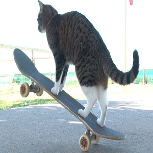
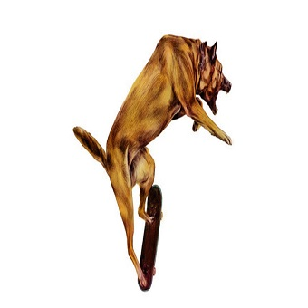

R&J Association - Ayuda a un Peludo
En esta asociación nos dedicamos a recoger gatos y perros callejeros, darles un techo, comida, ponerle sus vacunas y prepararlos para ser adoptados. Llevamos en este rubro aproximadamente 7 meses y nos destacamos por nuestro amor hacia los animales, ya que constantemente estamos en busqueda de donadores y de veterinarios para ampliar nuestro equipo lo más rápido posible para así poder darles un mejor trato a nuestos peluditos en el menor tiempo posible.
Nuestros Integrantes:
Rodrigo Marchant - Dictador Marxista
José Bello - Veterinario
Felipe Rubio - Asistente de Sanidad Animal
Nuestas secciones de Ayuda:
Gatos
Perros